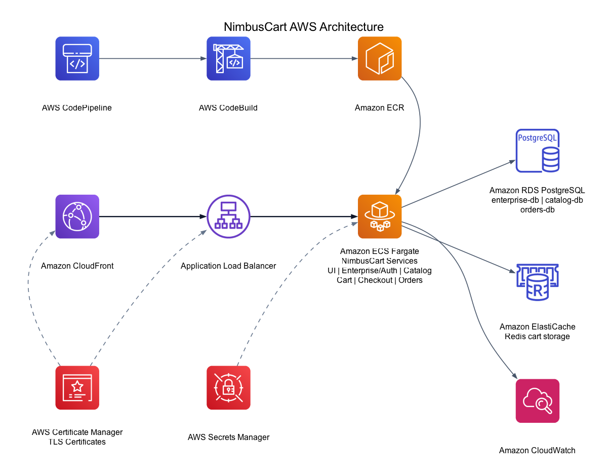
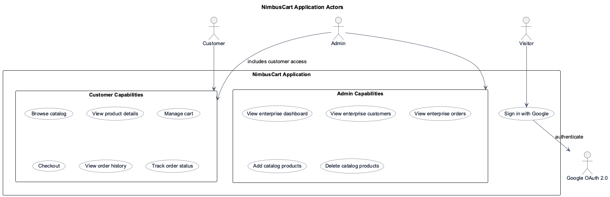

| Date | Version | Description | Author |
|---|---|---|---|
| May 7, 2026 | 1.0 | Initial NimbusCart project report with architecture, actor model, deliverables, risks, and test plan. | Project Team |
| May 7, 2026 | 2.0 | Added team details, course metadata, and project classification for the Cloud Services submission. | Project Team |
| May 7, 2026 | 3.0 | Updated report content to match the current NimbusCart README, service map, AWS deployment scope, and CI/CD details. | Project Team |
This report describes NimbusCart, a cloud-native retail and enterprise data portal. It summarizes the project scope, architecture, application actors, development approach, deliverables, risks, schedule, testing strategy, and references.
The intended audience includes course evaluators, project stakeholders, developers, maintainers, and reviewers who need a clear understanding of the system and its cloud deployment model.
NimbusCart provides an authenticated e-commerce experience for customers and an admin-only enterprise dashboard. The system uses microservices, AWS deployment support, Google OAuth 2.0 authentication, JWT authorization, and role-based access control for customer and admin roles.
| Term | Meaning |
|---|---|
| NimbusCart | Project name for the retail and enterprise data portal. |
| RBAC | Role-based access control using customer and admin roles. |
| JWT | JSON Web Token used for stateless API authentication. |
| ECS Fargate | AWS container runtime used to deploy application services without managing servers. |
| RDS | Amazon Relational Database Service used for PostgreSQL databases. |
| ElastiCache | AWS managed Redis service used for cart storage. |
| CI/CD | Continuous integration and continuous deployment. |
Modern retail applications need secure authentication, scalable services, reliable data storage, and a repeatable cloud deployment path. NimbusCart addresses these needs by combining customer shopping workflows with enterprise data visibility for administrators.
| Objective | Description |
|---|---|
| Secure authentication | Provide Google OAuth 2.0 sign-in and JWT-based authenticated API access. |
| Customer shopping | Support product browsing with tag filtering, Redis-backed cart management, checkout, and order tracking. |
| Admin operations | Provide enterprise views for products, customers, orders, revenue summaries, and protected product management. |
| Service separation | Use microservices so each service owns a focused responsibility. |
| Cloud deployment | Use AWS-native infrastructure and CI/CD services for deployment. |
NimbusCart is organized into independent services for UI, authentication and enterprise data, catalog, cart, checkout, and orders. AWS services provide load balancing, container runtime, databases, cache, secrets, logs, image storage, and deployment automation.

| Service | Responsibility | Data Store |
|---|---|---|
| UI | Vue 3 frontend web application for customers and admins. | None |
| Enterprise/Auth | Google OAuth, JWT issuing, RBAC, enterprise dashboard APIs. | PostgreSQL enterprise-db |
| Catalog | Product catalog and tag APIs with admin product writes. | PostgreSQL catalog-db |
| Cart | Per-user cart storage, updates, and 7-day TTL handling. | Redis |
| Checkout | Checkout orchestration that fetches cart data, creates orders, and clears the cart. | None |
| Orders | Order creation, order history, and status tracking. | PostgreSQL orders-db |
NimbusCart has three primary application actors: visitors, customers, and admins. Google OAuth 2.0 acts as the external identity provider for sign-in.

| Actor | Description | Primary Capabilities |
|---|---|---|
| Visitor | Unauthenticated user. | Sign in with Google. |
| Customer | Authenticated default user role. | Browse catalog, manage cart, checkout, view orders, track order status. |
| Admin | Privileged authenticated user role. | Customer access plus enterprise dashboard and catalog product management. |
| Google OAuth 2.0 | External identity provider. | Authenticates users during sign-in. |
The project is organized around service ownership. Each service has a focused responsibility and can be built, tested, containerized, and deployed independently.
| Area | Responsibility |
|---|---|
| Frontend | User interface, routing, authentication state, customer pages, and admin dashboard views. |
| Backend Services | Auth, catalog, cart, checkout, orders, and enterprise APIs. |
| Data Layer | PostgreSQL schemas for enterprise, catalog, and orders data; Redis cart storage. |
| Cloud Infrastructure | AWS CDK stack, ECS Fargate services, RDS, ElastiCache, ALB, ECR, Secrets Manager, and CloudWatch. |
| CI/CD | CodePipeline, CodeBuild, ECR image publishing, and ECS service update integration using the root buildspec. |
NimbusCart was developed using an iterative microservices approach. Authentication and UI foundations were built first, followed by catalog, cart, checkout, and orders services. Infrastructure and CI/CD support were added after the application services were functional.
| Deliverable | Description | Status |
|---|---|---|
| Frontend application | Customer and admin UI with login, catalog, cart, orders, and enterprise pages. | Completed |
| Authentication and RBAC | Google OAuth 2.0, JWT, customer/admin roles, route guards, backend middleware. | Completed |
| Microservices | Enterprise, catalog, cart, checkout, and orders services. | Completed |
| Databases and cache | PostgreSQL schemas and Redis cart storage. | Completed |
| Docker Compose | Local development stack for services, databases, and Redis. | Completed |
| AWS CDK infrastructure | Cloud infrastructure for ECS Fargate, RDS, ElastiCache, ALB, ECR, Secrets Manager, CloudWatch, CodePipeline, and CodeBuild. | Completed |
| CI/CD build spec | CodeBuild configuration for image build, ECR push, and ECS service updates. | Completed |
| Project documentation | README, architecture diagrams, actor UML diagram, and project report. | Completed |
| Risk | Impact | Mitigation |
|---|---|---|
| OAuth callback misconfiguration | Users cannot sign in after deployment. | Document local and ALB callback URLs and update Google Cloud Console after deployment. |
| JWT secret mismatch | Services reject valid user tokens. | Use AWS Secrets Manager and shared environment configuration across services. |
| Database connectivity issues | Service startup or request failures. | Use health checks, service-specific environment variables, and clear security group rules. |
| Role enforcement gaps | Unauthorized access to admin actions. | Apply backend RBAC middleware and frontend route guards for admin-only features. |
| Deployment complexity | Longer setup and troubleshooting time. | Use AWS CDK and Docker-based service packaging to keep infrastructure repeatable. |
| Phase | Milestone | Output |
|---|---|---|
| 1 | Project setup and architecture planning | Service boundaries, repository structure, and implementation plan. |
| 2 | Authentication and frontend foundation | Google OAuth flow, JWT store, protected routes, login and home pages. |
| 3 | Core service implementation | Enterprise, catalog, cart, checkout, and orders services. |
| 4 | RBAC and admin features | Customer/admin roles, catalog write protection, enterprise dashboard. |
| 5 | Containerization and local stack | Dockerfiles and Docker Compose environment. |
| 6 | AWS infrastructure and CI/CD | CDK stack, buildspec, ECR, ECS, CodePipeline, and CodeBuild support. |
| 7 | Documentation and diagrams | README, AWS architecture diagram, actor UML diagram, and report. |
| Test Area | Purpose | Expected Result |
|---|---|---|
| Authentication | Verify Google OAuth callback, JWT generation, token storage, and logout. | User can sign in, access protected routes, and sign out. |
| RBAC | Verify customer and admin permissions. | Customers cannot access admin-only APIs or UI; admins can manage enterprise features. |
| Catalog | Verify product reads and admin product writes. | Products load for authenticated users; add/delete operations require admin role. |
| Cart | Verify add, update, remove, and clear cart operations. | Cart state persists in Redis and respects user identity. |
| Checkout | Verify cart-to-order orchestration. | Checkout creates an order and clears the cart. |
| Orders | Verify order history and detail views. | Authenticated users can view their order records and status. |
| Local stack | Verify Docker Compose startup. | All services, databases, and Redis start successfully. |
| Cloud deployment | Verify AWS infrastructure and service routing. | ALB routes requests to the correct ECS services and logs are available in CloudWatch. |
git@github.com:AK9175/NimbusCart.gitREADME.mddiagrams/aws_architecture_clean.pngdiagrams/nimbuscart_application_actors.pngdiagrams/nimbuscart_application_actors.pumlinfrastructure/Project_Plan_document.docx